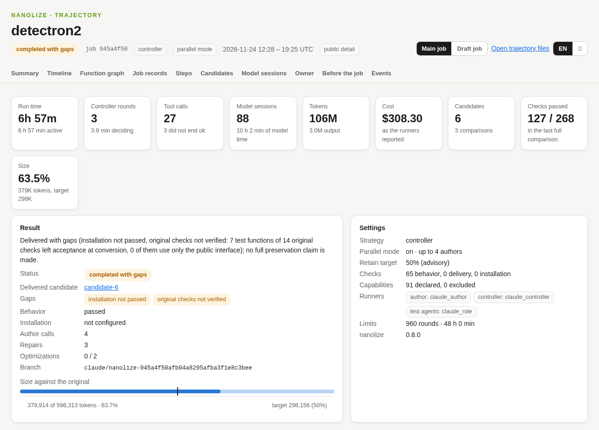

用刚更新到 main 最新提交的 nanolize 插件，在 detectron2 上做了一次全功能、无人值守、成对并行的运行。这一页记录结果：交付了什么，时间和钱花在哪里，测试设计给出了什么，修了几轮，以及这次运行暴露出的 nanolize 自己的问题。
__init__.py 没有导出该导出的名字，检查一导入就失败。第一轮修复由一个作者通读全部代码补齐，失败降到 5 条。这次运行用的是这台机器上刚更新过的插件，也就是 main 的最新提交。除了你给的五项设置，其余都取默认值。
| nanolize | main @ 074f9946（PR #60 合入之后），运行时 0.8.0，49 个工具。用的是给这个账号安装的插件，不是临时目录里的副本 |
| 命令 | $nanolize detectron2 agent=claude model=claude-fable-5-2 effort=high unattended=on parallel=on pair=on scope=all，另加调度器的三项设置。没有 --cn，没有开性能验收，因为你没有提 |
| 项目 | detectron2 @ 247691a，全新克隆。450 个源文件、71,975 行、81 个测试文件；按 nanolize 的算法是 596,313 token（源码 584,429，配置 11,884） |
| 主持会话 | 一个全新的 Claude Code 会话（claude-fable-5-2，effort high），在计算节点上的批处理作业里无人值守地从头跑到尾，32 核、96 GB |
| 检查在哪跑 | 经调度器在计算节点上执行，最多 8 条同时 |
| 测试环境 | 现成的环境（Python 3.11，torch 2.5.1），没有重新搭。两个准备步骤：复制一份编好的 _C 扩展；建模型库的配置链接 |
| 安装检查 | 没有给。在全新环境里编 C++ 扩展要一次编译和几个 GB 的下载，这次没有做，所以交付会把“没有安装证据”记成一个缺口 |
| 作业的默认设置 | 体积目标是原版的 50%（只是建议值，不强制）；开测试设计，每个测试在原版上重复 3 次并做敲除验证；并行时最多 4 个作者同时写；作业时限 48 小时 |
scope=all，全部选中，没有退役的功能。时间都是 UTC。主持会话 11:50 启动，12:28 提交；主作业 19:25 交付。两条横条用的是同一根时间轴：上面是主作业，下面是和它同时进行的草稿作业。
| 阶段 | 起止 | 用时 | 做了什么 |
|---|---|---|---|
| 第 01、02 阶段主持会话 | 11:50 – 12:28 | 38 分 | 读项目、画功能图、试跑原版测试、写清单、选中全部功能并提交。114 轮对话，19 美元 |
| 冻结主作业 | 12:28 – 15:12 | 2 小时 44 分 | 第一次基线 18.6 分，测试设计 93.5 分，第二次基线 46.8 分，封存约定 4.1 分。见基线和测试设计 |
| 写第一版草稿作业，和冻结同时 | 12:28 – 17:14 | 4 小时 46 分 | 自己的基线和封存 9 分，然后分五层写：第 1 层 1 个作者，后四层各 3 到 4 个作者并行。见成对和并行 |
| 等第一版主作业 | 15:12 – 17:14 | 2 小时 1 分 | 主作业封存完之后没有别的事可做，等草稿作业写完 |
| 导入和第一次比较 | 17:14 – 17:38 | 24 分 | 把草稿作业的 359 个文件作为候选版本 1 导入；完整比较 22.5 分，141 / 268 条没过 |
| 修复第 1 轮 | 17:38 – 18:36 | 58 分 | 控制器 2 分（第一份答复被拒，重答一次）；一个作者通读全部代码修了 46.8 分；完整比较 7.6 分，剩 5 条 |
| 修复第 2 轮 | 18:36 – 19:03 | 27 分 | 两个作者并行各修一块，各 7 到 8 分；在这之前建两个工作区用了 13 分；只跑相关的 5 条检查 3.4 分，剩 1 条 |
| 修复第 3 轮 | 19:03 – 19:19 | 16 分 | 一个作者修了 4.7 分；先跑相关的 5 条（2.7 分，全过），再做完整比较（6.5 分），268 条全部通过 |
| 交付 | 19:19 – 19:25 | 5 分 | 选定候选版本 6，生成报告和验证包，把转换时离开验收的原版测试在交付的代码上回放一遍 |
做个参照：之前只选核心功能的那次 detectron2 运行，从提交到交付是 1 小时 47 分，第一版一次通过。全功能多出来的时间主要是给外围功能设计测试，以及写和修更多的代码。
全功能运行和只选核心功能的运行，最大的差别在这一段：很多外围功能在这个环境里没有能用的原版测试，要先给它们设计测试，作者才能开始写。这一段用了 2 小时 44 分，花了 273 美元，都发生在第一个候选版本出现之前。
| 步骤 | 用时 | 结果 |
|---|---|---|
| 第一次基线捕获 | 18.6 分钟 | 65 条检查在原版上全部通过，基线可用。敲除验证之后，41 个叶子没有“有效的测试”（把这个叶子的代码拿掉，没有哪条检查会因此失败） |
| 测试设计 | 93.5 分钟 | 给 47 个叶子设计或迁移测试：53 个设计会话分三轮（47、1、5 个），27 个评审会话。结果见下表 |
| 第二次基线捕获 | 46.8 分钟 | 加上设计出的 203 个文件后共 268 条检查，在原版上全部通过；没有叶子还缺有效测试 |
| 测试设计的结果 | 接受 | 拒绝 | 拒绝的原因 |
|---|---|---|---|
| 设计的测试46 个叶子 | 149 | 15 | 7 个测的是对外约定之外的东西；6 个被评审否决；2 个在原版上不通过 |
| 场景文件41 个叶子，共 1,377 个用例；原版在每个用例上的表现就是候选版本必须有的表现 | 54 | 3 | 1 个在对外约定之外；1 个被评审否决；1 个只在“连导入都失败”时才会被敲除发现 |
| 要迁移的原版测试10 个叶子，37 个 | 30 | 7 个没能验证：在设计者运行的地方查不了，或者断言的是文档字符串 |
主作业在提交后 6 小时 57 分以“带缺口交付”结束。交付的是候选版本 6，放在仓库里的一个结果分支上，没有推送也没有合并。
| 比较 | 范围 | 用时 | 没过 | 没过的在哪 |
|---|---|---|---|---|
| 候选版本 1导入的第一版 | 完整，268 条 | 22.5 分 | 141 | 分布在几十个功能上。约 125 条是同一种错：检查还没开始跑，导入就失败了 |
| 候选版本 2第 1 轮修复之后 | 完整，268 条 | 7.6 分 | 5 | 三个数据集功能（cityscapes、coco、lvis）和两组项目配置（MViTv2、ViTDet） |
| 候选版本 5第 2 轮修复之后 | 只跑相关的 5 条 | 3.4 分 | 1 | ViTDet 的配置 |
| 候选版本 6第 3 轮修复之后 | 先跑相关的 5 条，再完整 268 条 | 2.7 分 + 6.5 分 | 0 | 全部通过，随后选定并交付 |
候选版本 3、4 是第 2 轮里两个并行作者各自的结果，合并成候选版本 5，没有单独比较。
| 原版 | 交付 | 比例 | |
|---|---|---|---|
| token源码加配置，nanolize 的算法 | 596,313 | 379,914 | 63.7% |
| 源码行数 | 71,975 | 48,695 | 67.7% |
| 源文件数 | 450 | 399 |
nanolize 的原话：交付有缺口，不作“功能完全保留”的声明。通过检查也不等于证明了语义等价。
test_lcp，它和原版的内部结构绑定，不是只用公开接口的测试。| 花费 | 会话 | 美元 | 占比 | 说明 |
|---|---|---|---|---|
| 测试设计 | 80 | 272.86 | 47% | 53 个设计会话 194.49，27 个评审会话 78.37 |
| 第一版草稿作业 | 17 | 239.63 | 42% | 16 个作者会话 237.98，控制器 1.65 |
| 修复 | 4 | 27.00 | 5% | 第 1 轮 16.16，第 2 轮 2.76 + 4.83，第 3 轮 3.25 |
| 主作业的控制器 | 4 | 8.43 | 1% | 三轮；第 1 轮答了两次 |
| 主持会话 | 1 | 27.07 | 5% | 第 01 阶段 18.88，之后七个小时的观察和收尾 8.19 |
| 合计 | 106 | 575.00 | 两个作业共报告 3.19 亿 token，其中模型写出的约 537 万，其余是读入的上下文 |
花费是各会话自己报告的数字相加，全部会话都有报告。模型都是 claude-fable-5-2，effort high。
pair=on 把运行分成两个作业：主作业做冻结（基线、测试设计、封存），草稿作业同时开始写第一版，写完交给主作业去比较和修复。parallel=on 让草稿作业把 80 个叶子分成 16 个互不重叠的范围，按依赖关系排成五层，同一层的范围由不同的作者同时写，各在自己的工作区里，写完再合并。
| 层 | 范围 | 叶子 | 起止 | 用时 | 其中建工作区 | 每个作者写了 | 美元 |
|---|---|---|---|---|---|---|---|
| 1 | 1 | 7 | 12:40 – 13:11 | 30.7 分 | 不用建 | 30.4 分 | 17.99 |
| 2 | 4 | 26 | 13:11 – 14:08 | 56.5 分 | 25.1 分 | 20.7 – 30.3 分 | 57.50 |
| 3 | 4 | 21 | 14:08 – 15:20 | 72.6 分 | 25.4 分 | 23.1 – 45.9 分 | 66.03 |
| 4 | 4 | 21 | 15:20 – 16:26 | 66.0 分 | 25.5 分 | 17.9 – 38.8 分 | 61.27 |
| 5 | 3 | 5 | 16:26 – 17:13 | 47.1 分 | 19.3 分 | 13.4 – 26.1 分 | 35.20 |
| 合计 | 16 | 80 | 4 小时 33 分 | 95 分 | 会话时间合计 7 小时 10 分 | 237.98 |
__init__.py 是空的或不全，268 条检查里 141 条没过，其中约 125 条是导入失败。第 1 轮修复让一个作者通读全部代码，对照原版把每个包该导出的名字补齐，用了 47 分钟、16 美元，失败降到 5 条。| 修复 | 控制器的安排 | 作者用时 | 美元 | 结果 |
|---|---|---|---|---|
| 第 1 轮 | 一个作者，面向全部功能：补齐各个包的导出，以及由此引起的几处导入错误 | 46.8 分 | 16.16 | 141 → 5 |
| 第 2 轮 | 两个作者并行，各在自己的工作区：一个修数据集，一个修项目配置 | 6.6 分、8.0 分 | 7.59 | 5 → 1 |
| 第 3 轮 | 一个作者，只修 ViTDet 的配置 | 4.7 分 | 3.25 | 1 → 0 |
没有哪次保存被拒绝，也没有恢复过旧的候选版本。设置允许 2 次体积优化，一次也没有用。
没有。PR #61 解决的是：无人值守的运行里，主持会话写的清单有错，导致在原版上捕获的基线“不是可用的判据”（例如运行时审计在没改过的原版上就不通过，于是每条检查都记成违规），而主持会话什么都不改，作业带着全盘不通过的检查继续跑完。这次运行里：
| 这次看到的 | 和 PR #61 的关系 | |
|---|---|---|
| 主作业 | 两次基线都可用：65 条和 268 条检查在原版上全部通过，带运行时审计的检查审计也都通过。没有出现“基线不可用”的事件 | PR #61 的情况没有发生 |
| 草稿作业 | 出现了“基线不可用”的事件，原因是“没有行为约定”：草稿作业不设计测试，31 个叶子在这里没有能通过的原版检查，所以它自己的就绪检查是“受阻”。65 条检查本身在原版上都通过 | 不是清单写错了。PR #61 的新规则只在“能指出清单的哪一处错了”时才取消重交，否则作业照常继续，所以即使用了 PR #61，这里的走向也一样 |
| 主持会话 | 没有改任何东西，让草稿作业继续，并在问题记录里写了原因：现在的 skill 对这个事件给了两条路，但都要所有者点头，而无人值守时没有所有者 | 这正是 PR #61 改的那句话。这次因为不是清单的错，“不改”是对的 |
只选核心功能的那几次 detectron2 运行里，草稿作业也报过同样的事件，原因相同。
运行期间有两种页面：运行页（六个阶段的实时进度）和轨迹页（事后回看每一步、每个会话）。这次运行正好碰上了问题 B1，所以两种页面在作业后半程都不完整。下面是轨迹页打开时的样子。

运行页在交付之后读不了这个作业（数据接口返回 503），所以这里没有运行页的截图。轨迹页往下还有时间线、功能图、每一步和每个会话的记录；公开级别的轨迹仍然保留作业事件的原话，里面有调度器的设置，所以这里只截了顶部。
分两组。第一组是 nanolize 自己的问题，需要改代码或改 skill 的文字；第二组是这次运行里看到的现象，按现在的设计就是这样，不需要改，列出来是为了读结果时心里有数。两组都不影响这次交付结果的对错。
verification.json is a link or exceeds its size bound；运行页的数据接口返回 503。它只能改用另一个工具和作业自己的记录来读结果。按记录的大小推断，从第二次比较的记录写出（18:36）起就已经是这样。轨迹记录也受影响：五次比较只记下三次，缺的两次里有交付所依据的那次完整比较；功能图整个没有读到。都是主持会话在运行中记下的。每一处它都自己找到了办法，没有影响结果，但都花了额外的轮次。
--deselect 改成 -k 表达式再转换一次，主持会话试了三次才全部恢复。skill 也没说重复转换会怎么处理上一次写出的文件。| 现象 | 为什么不算问题 | |
|---|---|---|
| O1 | 草稿作业报“基线不可用” | 草稿作业不设计测试，31 个叶子在它那里没有检查，所以它自己的就绪检查不通过。清单没有错，主作业的基线可用。见 PR #61 一节 |
| O2 | 10 条（后来 11 条）原版检查在“干净导出”里不能重现，不参与敲除验证 | 它们要读模型库的配置，而那个链接是准备步骤在工作树里建的，干净导出里没有。这是清单的写法带来的，它们仍然是每个候选版本的验收条件 |
| O3 | 控制器第 1 轮的第一份答复被拒 | 它给作者写的指令有 4,282 个字符，上限是 4,000。nanolize 让它重答一次，第二份 3,280 个字符，通过。多花 44 秒和 2.11 美元 |
| O4 | 第一版 141 条检查没过，大部分是包的导出不全 | 并行的作者按规则不碰共用的包文件，这是避免合并冲突的代价。一轮修复就补齐了。值得考虑的改进：草稿作业交卷时已经数出有 5 个模块缺失，可以先补一轮再交，省掉一次 22 分钟的完整比较 |
| O5 | 测试设计占了 47% 的花费，冻结里 57% 的时间 | 全功能意味着 41 个叶子在这个环境里没有能用的原版测试，都要设计。设计出的文件里有 10 个被拒绝后没有再交还给设计者，作业的事件里写明了；所有叶子最后都有有效测试 |
| O6 | 检查全过之后直接交付，没有做体积优化 | 设置允许 2 次优化，体积目标只是建议值，作业的优先级是“功能优先”。控制器在第 3 轮的计划里就写了“通过就交付” |
| O7 | 和原版的重合度 62%，高于报告标记的 40% | 默认设置下重合度只度量、不要求重写。想要更“自己写”的结果，要在设置里打开因重合度重写 |
| O8 | 交付后回放原版测试，1 个不通过 | 回放只报告，不改变状态。那个测试和原版的内部结构绑定，转换时已经离开验收 |
| O9 | 主作业封存之后空等了 2 小时 | 成对模式下主作业要等草稿作业写完。如果没有 B2，草稿作业会早 95 分钟左右写完，这段等待大约只剩 26 分钟 |
| 内容 | |
|---|---|
| 作业 | 主作业 945a4f50afb04a8295afba3f1e8c3bee（带缺口交付），草稿作业 e4e7c1644c9a46aa9d8a51d37cfc0d08（写完第一版后结束） |
| 结果分支 | claude/nanolize-945a4f50afb04a8295afba3f1e8c3bee，在这次运行自己克隆的仓库里。没有推送，没有合并 |
| 项目 | detectron2 @ 247691a，外加一个提交：主持会话恢复出的 13 个测试文件（44 个测试）。撤销那个提交就回到原样 |
| nanolize | main @ 074f9946，运行时 0.8.0。这是 PR #60 合入后的提交，合并的经过见合并记录 |
| 还留着的 | 两个作业的全部记录、主持会话的完整对话流和它写的问题记录、轨迹记录（所有者级别和公开级别各一份）、验证包、本地生成的报告站点 |